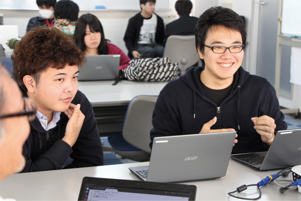
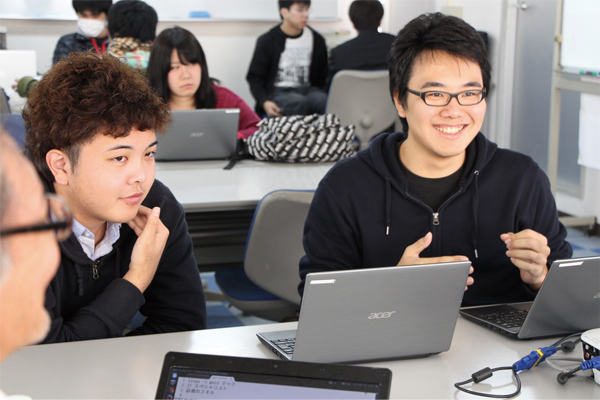

ITスペシャリスト科
昼間:3年 定員:15名

プログラミングについて全く知識のない人でも大丈夫！ 基本からしっかり教えます。
IT企業で働くプロの講師を招き、現場で通用する最先端の技術を学びます。
昼間:3年 定員:15名
プログラミングについて全く知識のない人でも大丈夫！ 基本からしっかり教えます。
IT企業で働くプロの講師を招き、現場で通用する最先端の技術を学びます。
スマートフォンやタブレットで使用されているAndroid。アイカレでは2008年からメインのカリキュラムとしてAndroidアプリ開発を取り入れています。 この講義では最新のプログラム言語「Kotlin」を導入、スマートフォン、タブレット向けのアプリ開発を行っています
初心者にも学びやすいとして注目されている言語「Python」をプログラミングの基礎のカリキュラムとして学び、さらにFacebookのフレームワークで有名な「React.js」をカリキュラムに導入。この講義ではWebアプリケーション開発するプログラマはもちろん、様々な分野で活躍できるプログラマを最新の環境で育成します。
プロブレム」ではなく「プロダクト」！世界的に注目を集め始めている「Product Based Learning」をいち早くカリキュラムに取り入れています。 この講義では実際に使用できる製品(プロダクト)を開発し、開発の流れや製品開発を重点とすることで目標が明確になり、高いスキルを身につけることができるようになります。